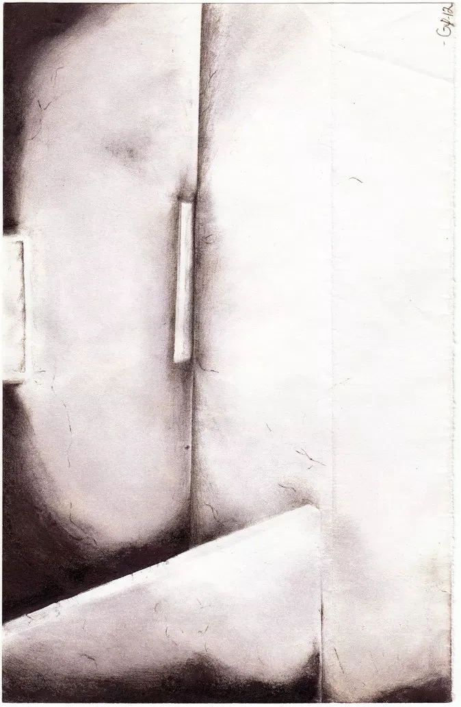

The science of solitary confinement

CBC’s Quirks and Quarks had a segment this week about the psychology of solitary confinement. Bob McDonald interviewed Dr. Craig Haney, one of the expert witnesses in the BC Supreme Court case that resulted in portions of Canada’s solitary-confinement regime being struck down as unconstitutional.,
This is a short comment on that case, British Columbia Civil Liberties Association v Canada (Attorney General) (BCCLA v Canada), focusing on the judge’s handling of the scientific evidence.
Context
This case turned on the judge’s understanding of nuanced scientific arguments between experts with competing opinions. The scientific evidence was essential to the judge’s finding that the way that we currently use solitary confinement “places all Canadian federal inmates subject to it at significant risk of serious psychological harm, including mental pain and suffering, and increased incidence of self-harm and suicide.”
I did not listen to or read transcripts of the testimony of the scientific experts in this case. This comment is based only on the presentation of the evidence by Justice Leask in his written decision. In the following, I assume that he has given a fair presentation of that evidence. I am not a psychologist, but I am a scientist. I understand evidence, experiments, statistical tests and power, causation, and the strengths and weaknesses of meta-analyses and systematic reviews.
My take on the evidence as presented
Plaintiff’s experts
The evidence supports a claim that solitary confinement causes various harmful effects. There is a large body of clinical and experimental research establishing that when you restrict a person’s environmental and social stimulation, they suffer. Dr. Grassian has observed, in prisoners in solitary confinement, a rare confluence of psychiatric symptoms which we already know can be caused by restricting environmental and social stimulation. There is a correlation with the onset of the intervention: introduction of solitary confinement predictably shifts EEG patterns towards that characteristic of stupor and delirium. Psychiatric disturbances spring up anew when prisoners are segregated. When the segregated confinement is prolonged, there is a higher incidence of psychosis.
Further (and this relates to how we should view the government’s evidence), the nature of solitary confinement and the psychiatric symptoms make self-reporting a poor measure of effects. Prisoners will avoid acknowledging psychological harm out of spite against authorities whom they see as trying to “break them down”. Psychotic disturbances often have a dissociative character: individuals often do not recall events which occurred during confusional psychosis.
Dr. Grassian’s evidence must be seen in the context of the Bradford Hill criteria (useful for assessing causation from epidemiological evidence). In the case of solitary confinement, it would not be ethical to perform a randomized controlled trial. The government’s experts, Dr. Mills and Dr. Gendreau, point to the inability to deduce causation from this research. While this may be true, due to the lack of direct experimental evidence, the Bradford Hill criteria give guidance for making (abductive) inferences in spite of this.
The harmful effects are consistent across populations, the effects happen after the purported cause, there is a biological gradient (longer exposure is associated with higher incidence), there is a plausible mechanism for the causation, and the hypothesis is consistent with laboratory experiments on deprivation of environmental and social stimulus. This confluence of evidence supports an abductive inference that solitary confinement causes the harmful effects.
Government’s experts
The conclusions drawn by the government experts are not consistent with the evidence they claim to base it on. They look to low-power observational studies that used subjective self-reporting as a measure. These studies have a poor ability to detect an effect even if an effect were to be present. Because these studies failed to find an effect, the government experts concluded that there was no effect (“segregated inmates without mental illness do not experience debilitating psychological or psychiatric symptoms due to their placement in segregation”), or an effect of lower magnitude than argued by the plaintiffs (“that it is much milder than that predicted by the plaintiffs’ experts”), but these conclusions cannot be drawn from a negative results in low-powered studies.
Suedfeld et al (1982), a study relied upon by the government, gives contradictory and weak evidence. “A relationship was found between the length of stay and measures of depression and hostility” (a dose-response relationship; one of the Bradford Hill criteria that points in favour of finding an effect). But because of the small magnitude of the observed effect, the authors of that study gave a measured conclusion: it “did not support the claim that solitary confinement […] was overwhelmingly aversive, stressful, or damaging to inmates.” Again, this is just failure to find evidence for the effect, not positive evidence against the effect.
The government experts pushed the court to rely on longitudinal studies, which are more like an experiment in that they observe what happens before and after the onset of an intervention. They believe the “Zinger study” to be worth significant weight. The population for this study was 83 segregated plus 53 general-population prisoners. The segregated population initially reported more depressive symptoms, but not on a measure of hopelessness. Both segregated and non-segregated prisoners improved over the 60 days of the study on measures of depression, anxiety, hopelessness, and psychological adjustment. The fact that both populations improved over the 60-day study is interesting scientifically. It puts into question whether the fact of observation on its own had an effect on the population or on their reporting. Perhaps when prisoners receive increased attention from others regarding their well-being and are asked to perform meaningful introspection and tell someone about, they feel better. Or maybe the participants felt a subconscious pressure to report improvement. Without blinding, this kind of observer effect is common.
Of course, a longitudinal study that tracks the response to an intervention over time has the potential to be more useful scientifically than a set of clinical observations as presented by Dr. Grassian, but the Zinger study has methodological weaknesses that make its negative finding unsurprising and definitely not positive evidence for the claim that there is no effect.
Another study that the government experts emphasized was a pair of meta-analyses by Morgan and Gendreau. Meta-analyses (and systematic reviews especially) can be a great tool for evaluating an entire body of evidence generated by many separate research teams. By pooling together participants, meta-analyses can find effects when individual studies were too small to find one. They can tease out patterns of a decreasing effect size with increased rigor (a marker of there being only a small or no effect). They can detect publication bias (where research teams across an entire field withhold studies that don’t show statistically significant effect).
Paragraph 206 summarizes the Morgan and Gendreau studies: “the two studies […] found that the differences between segregated and non-segregated inmates ranged from small to moderate on a wide range of psychological indicators.” But, they also found that “the size of these differences were significantly reduced when only the studies rated as more scientifically rigorous were considered.” As I mentioned above, this pattern in a body of research is an indicator of a small or non-existent effect. But, using this move depends on an accurate assessment of a study’s scientific rigor, and Dr. Grassian, one of the plaintiff’s experts, criticized the selection criteria for the Morgan study.
Regardless, the government expert concludes: “the findings do not support the notion that, as a group, inmates in segregation suffer […] when compared with inmates outside of segregation.”
Two things are important from this conclusion. It is a conclusion “as a group”. And again, even taken at face value, it is only a failure to find positive evidence for the effect, not positive evidence that there is no effect. With an effect that might vary within specialized subpopulations, and subjective psychological measures involving self-reporting that the participants may have motivations or incentives for hiding, it isn’t unexpected that a meta-analysis would find no evidence for an effect.
Last, the government relies on the “Colorado Study”. But, there is one criticism of the study that is so fatal to its relevance that I will not even present its results. The study relied on self-reporting scales. But, the corrections staff also kept objective data in the form of psychiatric crisis records (for self-harm, suicide, psychotic disturbances). These crisis records squarely contradicted the prisoners’ self-reporting. According to the self-report scales, there was no deterioration within the segregated population over the course of 12 months. The crisis records show the opposite. Only 12 episodes occurred in the first six months; 25 occurred in the second six months.
The methodological weaknesses in both the “Colorado study” and the “Zinger study” also affect the relevance of the Morgan and Gendreau meta-analysis because they were both included in the small set of studies meeting the selection criteria, and the “Colorado study” was one of the studies identified to be weighted as having a “stronger” quality design.
Discussion
This is a difficult scientific question. The plaintiff’s experts do not point to evidence that experimentally establishes a causal link between solitary confinement and psychological harm. They do, however, point to a confluence of evidence that, when viewed in light of the Bradford Hill criteria, strongly suggests an effect.
The evidence presented by the government is based on methods that have the potential to be more revealing. However, due to methodological weaknesses involved in the specific applications of those methods, this evidence is actually not revealing.
I have emphasized the distinction between (1) failing to find an effect and (2) finding positive evidence that there is no effect. Of course, one cannot prove a negative; failure to find positive evidence that there is no effect should not be fatal to any counter-evidence. But, when you present a study that you intend to negate the claim that there is an effect, that study should at least have been set up to be able to find an effect if the effect exists. That is, the study should be high powered. Failure to find an effect in a high power study can be very compelling evidence.
That is a tricky distinction and I am impressed that Justice Leask saw it. In this case, evidence that was obtained by methods that are generally less robust was owed more weight than evidence obtained by methods that are generally more robust.
In a Section 7 challenge, the plaintiffs only need to show a “sufficient causal connection” between the government action and the harm. They don’t need to show that solitary confinement is “the only or the dominant cause” of the harms. And, they only need to establish “a reasonable inference, drawn on a balance of probabilities.” Justice Leask found that the plaintiffs met that burden.
Related media
“End Solitary Confinement–BobbyLee’s Story”, BC Civil Liberties Association (26 May 2016).
Susan Haack, Defending Science–within Reason (Amherst, New York: Prometheus Books, 2007).
Susan Haack, “Of Truth, in Science and in Law” (2008) 73:3 Brooklyn Law Review 985.
Craig Haney, “Restricting the Use of Solitary Confinement” (2017) 1 Annual Review of Criminology 285.
Treacy Ziegler, “Memory of Space”, The Prison Arts Coalition (15 October 2014).
Treacy Ziegler, “The art of absolute loneliness”, Broad Street Review (3 June 2014).
Notes
1. ↑ Read how art can help people in solitary confinement express their experiences. See Treacy Ziegler, “Memory of Space”, The Prison Arts Coalition (15 October 2014). See also Treacy Ziegler, “The art of absolute loneliness”, Broad Street Review (3 June 2014).
2. ↑ “Months locked in a tiny box—how solitary confinement can erode mental health”, Quirks and Quarks, CBC (8 February 2019).
3. ↑ British Columbia Civil Liberties Association v Canada (Attorney General), 2018 BCSC 62 [BCCLA v Canada].
4. ↑ Canada appealed that result. The appeal was heard on November 13, 2018. The decision had not been announced at the time of this blog post’s original publication, but on June 24, 2019, the Court of Appeal for British Columbia held that “a legislative provision that authorizes the prolonged and indefinite use of administrative segregation in circumstances that constitute [solitary confinement]” are an unjustified violation of s 7 of the Charter. The Court of Appeal accepted all of the trial judge’s factual findings, which are the subject of this blog post. British Columbia Civil Liberties Association v Canada (Attorney General), 2019 BCCA 228.
5. ↑ BCCLA v Canada, supra note 3 at para 247.
6. ↑ Ibid at paras 163–194.
7. ↑ Ibid at para 200.
8. ↑ Ibid at paras 203–204.
9. ↑ Isn’t this actually a finding in favour of an effect?
10. ↑ BCCLA v Canada, supra note 3 at para 234.
11. ↑ Ibid at para 207.
12. ↑ Ibid at para 237.
13. ↑ Ibid at para 234.
14. ↑ Ibid at para 243.
15. ↑ Ibid at para 254.
16. ↑ That is, when a plaintiff challenges a government law or act on the basis that it infringes upon their Section 7 right to life, liberty, or security of the person.
17. ↑ Canada (Attorney General) v Bedford, 2013 SCC 72 at para 76.